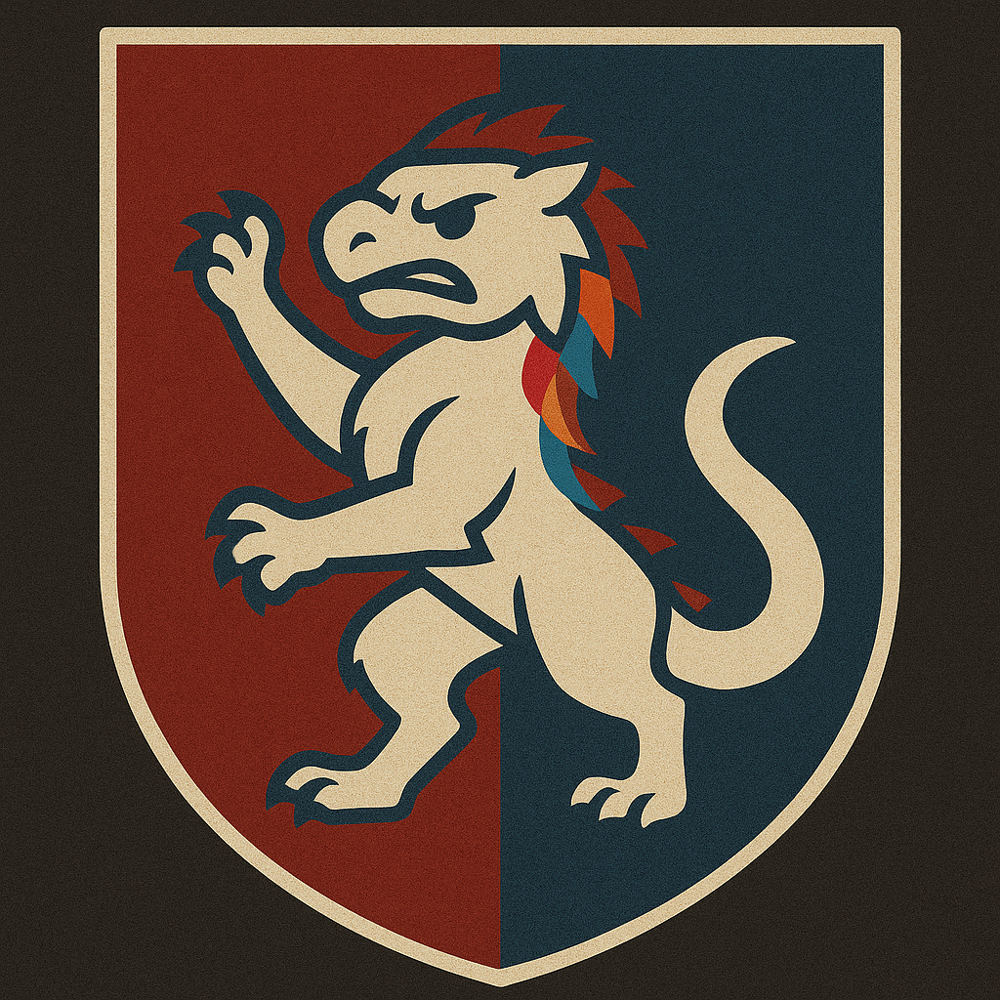

<!DOCTYPE html>
<html lang="es">

<head>
  <meta charset="UTF-8" />
  <meta name="viewport" content="width=device-width, initial-scale=1.0" />
  <title>DearBird Dashboard</title>
  <script src="https://cdn.tailwindcss.com"></script>
  <style>
    .fade-enter {
      opacity: 0;
      transform: translateY(10px);
    }

    .fade-enter-active {
      transition: all 0.2s ease-in-out;
      opacity: 1;
      transform: translateY(0);
    }

    /* Sidebar sticky */
    #sidebar {
      position: sticky;
      top: 0;
      height: 100vh;
      align-self: flex-start;
      overflow: hidden;
    }

    /* Reduce márgenes del main content */
    main.flex-1.p-6.space-y-6 {
      padding: 1.5rem !important;
      margin: 0 !important;
    }

    /* Notificación roja para el menú de chat */
    .chat-live-indicator {
      display: inline-block;
      width: 12px;
      height: 12px;
      border-radius: 50%;
      background: #ef4444;
      margin-left: 8px;
      vertical-align: middle;
      box-shadow: 0 0 6px 2px #ef4444cc;
      animation: live-pulse 1.2s infinite alternate;
    }

    @keyframes live-pulse {
      0% {
        box-shadow: 0 0 6px 2px #ef4444cc;
      }

      100% {
        box-shadow: 0 0 16px 6px #ef4444aa;
      }
    }
  </style>
</head>

<body class="bg-gray-900 text-white">
  <div class="flex min-h-screen">
    <!-- Sidebar -->
    <aside id="sidebar" class="w-64 bg-gray-800 p-5 flex flex-col h-screen" style="overflow:hidden;">
      <div class="flex items-center justify-between mb-2">
        <div class="flex items-center min-w-0">
          
          <h2 class="text-2xl font-bold truncate max-w-[110px]" style="max-width:110px;">DearBird</h2>
        </div>
        <button id="hide-sidebar-btn" onclick="toggleSidebar()"
          class="ml-2 text-gray-400 hover:text-white focus:outline-none" title="Ocultar menú">
          <svg xmlns="http://www.w3.org/2000/svg" class="h-6 w-6" fill="none" viewBox="0 0 24 24" stroke="currentColor">
            <path stroke-linecap="round" stroke-linejoin="round" stroke-width="2" d="M6 18L18 6M6 6l12 12" />
          </svg>
        </button>
      </div>
      <nav id="sidebar-menu" class="flex-1 flex flex-col space-y-3 overflow-y-auto">
        <a href="#" onclick="event.preventDefault(); loadSection('dashboard')" class="hover:bg-gray-700 p-2 rounded" id="menu-dashboard">Dashboard</a>
        <a href="#" onclick="event.preventDefault(); loadSection('tropas')" class="hover:bg-gray-700 p-2 rounded" id="menu-tropas">Tropas</a>
        <a href="#" onclick="event.preventDefault(); loadSection('edificios')" class="hover:bg-gray-700 p-2 rounded" id="menu-edificios">Edificios</a>
        <a href="#" onclick="event.preventDefault(); loadSection('tienda')" class="hover:bg-gray-700 p-2 rounded" id="menu-tienda">Tienda</a>
        <a href="#" onclick="event.preventDefault(); loadSection('chat')" class="hover:bg-gray-700 p-2 rounded" id="menu-chat">Chat
          <span id="chat-live-indicator" class="chat-live-indicator hidden"></span>
        </a>
        <a href="#" onclick="event.preventDefault(); loadSection('noticias')" class="hover:bg-gray-700 p-2 rounded" id="menu-noticias">Noticias</a>
        <a href="#" onclick="event.preventDefault(); loadSection('estadisticas')" class="hover:bg-gray-700 p-2 rounded" id="menu-estadisticas">Estadísticas</a>
        <button id="lang-btn" onclick="toggleLanguage()" class="bg-green-600 hover:bg-green-700 text-white p-2 rounded">Cambiar
          Idioma</button>
        <a id="logout-btn" href="#" onclick="logout()" class="hover:bg-red-600 bg-red-700 p-2 rounded mt-auto">Cerrar sesión</a>
      </nav>
    </aside>
    <!-- Botón para mostrar el menú -->
    <button id="show-sidebar-btn" onclick="toggleSidebar()"
      class="fixed top-4 left-4 z-50 bg-gray-800 text-white p-2 rounded shadow-lg hidden"
      title="Mostrar menú">
      <svg xmlns="http://www.w3.org/2000/svg" class="h-6 w-6" fill="none" viewBox="0 0 24 24" stroke="currentColor">
        <path stroke-linecap="round" stroke-linejoin="round" stroke-width="2" d="M4 6h16M4 12h16M4 18h16" />
      </svg>
    </button>

    <!-- Main Content -->
    <main class="flex-1 p-6 space-y-6">
      <div id="main-content" class="fade-enter">
        <!-- Contenido dinámico -->
      </div>
      <ul id="usuarios-lista"></ul>
      <script type="module" src="scripts/main.js"></script>
    </main>
  </div>
</body>

</html>